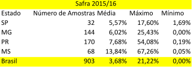

Simulador de perdas de Soja
Insira quantos quilos de soja você quer estimar a parda por vias de armazenamento:
Ao clicar em verificar serão feitas as simulações de acordo com a tabela!

Adaptado de (Lorini,Irineu 2018)
Verificar!